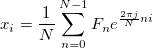
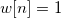
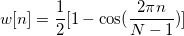

/math-865adb153c19640c27383f3fc1ee7e8a.png "N_1") と
と/math-0bf75941d6426e5efc12c0a20858452b.png "N_2") にファクタリングするものです。再帰的ファクタリングによって、信号は短く分けられます。短く分けられた変換の結果は乗算され、最終的に元の信号の変換が計算されます。FFTWについての詳細は、http://fftw.org/をご覧下さい。
にファクタリングするものです。再帰的ファクタリングによって、信号は短く分けられます。短く分けられた変換の結果は乗算され、最終的に元の信号の変換が計算されます。FFTWについての詳細は、http://fftw.org/をご覧下さい。IFFTは、逆フーリエ変換(IDFT)を実行する高速なアルゴリズムで、DFTの処理を元に戻します。データのIDFTは、次の式で定義できます。

OriginのFFTと逆FFTの計算は、FFTWライブラリを使って実行しています。FFTWでは、FFTの計算は、“codelets”と呼ばれるC言語のコードブロックで構成されるエグゼキュータにより実行されます。各codeletは、変換の一部に指定されています。これらのcodeletsを使って、エグゼキュータはCooley-TurkeyのFFTアルゴリズムを実行し、これの考えは入力信号のサイズ(Nで表される)をとにファクタリングするものです。再帰的ファクタリングによって、信号は短く分けられます。短く分けられた変換の結果は乗算され、最終的に元の信号の変換が計算されます。FFTWについての詳細は、http://fftw.org/をご覧下さい。
サンプリング間隔の自動計算に関する詳細は、FFTツールのアルゴリズムをご覧下さい。
ウィンドウ法
ウィンドウ法は漏れを抑えるのに使用します。Originで利用できる異なるウィンドウの種類が次のように定義されます。
矩形ウィンドウ：
(/math-533c558ebaeb07fba1a0c1bf16d82698.png "0\leq n\leq N-1") に対して) それ以外は0です。
に対して) それ以外は0です。
Welchウィンドウ：
![w[n]=1-\left( \frac{n-\frac 12(N-1)}{\frac 12(N+1)}\right) ^2](../images/Algorithm_(IFFT1)/math-36c370ad4c40cff081352cd6c147f4bf.png "w[n]=1-\left( \frac{n-\frac 12(N-1)}{\frac 12(N+1)}\right) ^2")
Triangularウィンドウ：
奇数: 
偶数: 
Bartlettウィンドウ：
/math-825eb9c392e4c816f626392c7bd01c1b.png "w(n)=\frac 2{N-1}(\frac{N-1}2-|n-\frac{N-1}2|)")
Hanningウィンドウ：

Hammingウィンドウ：
![w[n]=0.54-0.46\cos (\frac{2\pi n}{N-1})](../images/Algorithm_(IFFT1)/math-a6fd9500215ae9924cd381d672708a6d.png "w[n]=0.54-0.46\cos (\frac{2\pi n}{N-1})")
Blackmanウィンドウ：
![w[n]=0.42-0.5\cos (\frac{2\pi n}{N-1})+0.08\cos (\frac{4\pi n}{N-1})](../images/Algorithm_(IFFT1)/math-d1c1de031af458564cd1fdf389d5fa25.png "w[n]=0.42-0.5\cos (\frac{2\pi n}{N-1})+0.08\cos (\frac{4\pi n}{N-1})")
Gaussianウィンドウ：
![w[n]=exp(-0.5(Alpha( \frac{2n}{N-1}-1 ))^2) \,\!](../images/Algorithm_(IFFT1)/math-fab7a042f67f1dfb6dc5556e228508ec.png "w[n]=exp(-0.5(Alpha( \frac{2n}{N-1}-1 ))^2) \,\!")
Kaiserウィンドウ：
![w[n]=I(beta*\sqrt{1-(\frac{2n}{N-1}-1)^2}) / I(beta) \,\!](../images/Algorithm_(IFFT1)/math-04b7bbeb549a0b1d5ee22e3d50305676.png "w[n]=I(beta*\sqrt{1-(\frac{2n}{N-1}-1)^2}) / I(beta) \,\!")